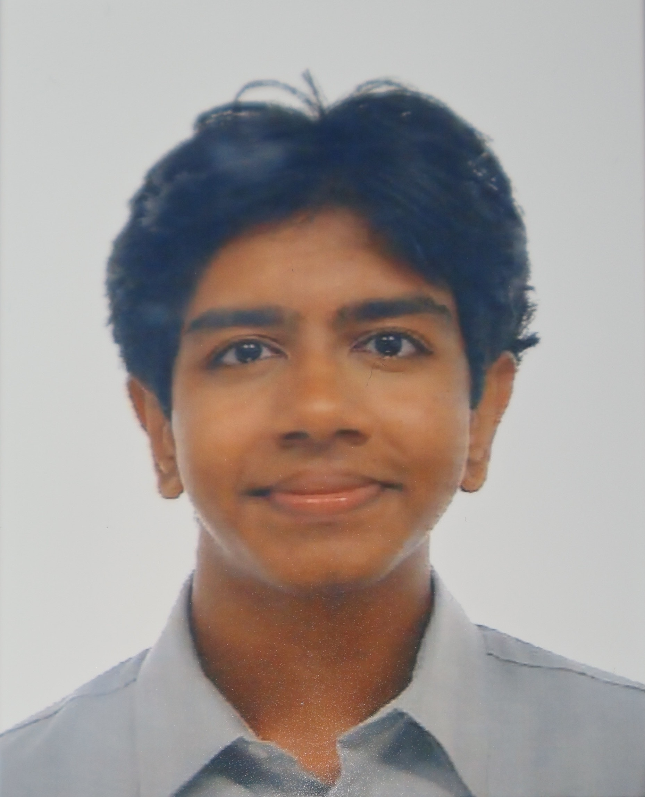

The person behind
Dark Skies SG
A Year 1 Applied AI and Analytics student who has never seen stars from home — and is determined to change that for the next generation.

Baldwin
Year 1 — Applied AI & Analytics • Singapore PolytechnicI am a first-year student studying Applied AI and Analytics at Singapore Polytechnic, with a particular interest in how technology can be applied to environmental challenges. When I am not studying or coding, I spend time doing astrophotography — or attempting to, through Singapore's relentless ambient glow.
I grew up in Bishan, looking out at a sky that is always amber, always lit. For years I assumed that was simply what the night sky looked like. A family trip to Cameron Highlands in 2025 showed me otherwise — and permanently changed how I think about sustainability.
This website is my attempt to share what I learned, and to show that light pollution — an issue almost nobody in Singapore is talking about — is a serious, solvable environmental crisis hiding in plain sight above our heads.
Why sustainability matters to me
I believe environmental problems do not always announce themselves with floods or wildfires. Sometimes they are as quiet and constant as a light left on all night.
Light pollution is a sustainability issue that costs energy, destroys ecosystems, harms human health, and quietly robs us of something deeply meaningful — the ability to stand under an open sky and feel connected to the universe.
I am also drawn to this topic because it sits at the intersection of technology and nature: the very tools that created the problem (LED technology, urban infrastructure) are the same tools that can solve it. Singapore, as a Smart Nation, has every capability needed to lead Southeast Asia on dark sky policy. What we need is the will to do it.
What I have done
-
2024 — Europe Trip
Stars Across Europe
During a family trip across Italy, Switzerland and France, I noticed how much darker the skies were compared to Singapore. Looking up at night in the countryside revealed thousands of stars — something I had never experienced growing up in Singapore's permanent amber glow.
-
2025 — Cameron Highlands Family Trip
First Dark Sky Experience
On a family trip to Cameron Highlands, Malaysia, I stepped outside at midnight and saw the night sky with minimal light pollution for the first time in my life. Returning home to Singapore's permanent amber glow made this issue feel personal and urgent.
-
2026 — Research Discovery
Singapore's Light Pollution Ranking
I discovered that Singapore was confirmed among the world’s most light-polluted nations by the 2023 Kyba et al. citizen science study in Science, which tracked global sky brightness from 2011–2022. Despite being one of the most affected countries, the issue is still widely overlooked here.
A Singapore where we can see the stars
“I dream of a Singapore where every child can walk to their void deck at midnight and see at least a handful of stars without leaving the island. That is not a fantasy — it is a policy choice.”
Smarter Street Lighting
Replace Singapore's street and corridor lighting island-wide with adaptive, shielded, downward-facing warm-white LEDs that dim automatically between midnight and 5am.
Purpose: This could reduce skyglow by 30–50% while cutting the national lighting electricity bill.
Dark Sky Corridors
Designate protected unlit wildlife corridors linking our nature reserves — Central Catchment, Bukit Timah, Sungei Buloh. Extend the principle to Pulau Ubin as a certified Dark Sky Sanctuary.
Purpose: To allow nocturnal animals like the Sunda pangolin and owlets safe foraging zones.
Dark Sky Education
Schools could integrate light-pollution awareness into science and geography lessons, partnering with programmes like Globe at Night to let students measure sky brightness in their own neighbourhoods.
Purpose: This allows every student to understand what light pollution is, why it matters, and what a simple bulb swap can achieve. This website is my small contribution to that goal.
Frequently Asked Questions
Common questions visitors ask about this project, the science, and getting started.
Is light pollution reversible, or is it permanent?
Unlike most environmental damage, light pollution is almost entirely reversible the moment you switch a light off. There is no residue to clean up, no soil to remediate. Cities that have adopted shielded, downward-facing warm LEDs have reported measurably darker skies within weeks. The challenge is political and cultural, not scientific.
Singapore is cloudy most nights. Does that make light pollution worse?
Yes, significantly. Cloud cover acts like a giant mirror, reflecting artificial light back down and amplifying skyglow. On an overcast night in Singapore, the sky can appear even brighter than on a clear night — the clouds trap and scatter the light upward from buildings and streets below. This is why our nights never truly go dark, even in a thunderstorm.
Aren't warm-white LEDs dimmer? Will my home feel gloomy?
Not at all. Brightness is measured in lumens, not colour temperature — a 2700 K warm-white bulb can be just as bright as a 6500 K cool-white one at the same wattage. The difference is the tone: warm white feels like candlelight or sunrise; cool white mimics midday daylight. Warm light is actually easier on the eyes indoors at night and signals to your brain that it is time to wind down.
Does the Singapore government have any dark sky policies?
As of 2026, Singapore has no dedicated light pollution legislation. The BCA and NEA regulate energy efficiency and some outdoor lighting standards, but sky-facing glare and skyglow are not formally controlled. NParks has taken steps to reduce lighting in some nature reserves, but there is no national dark sky framework comparable to those in the UK, Czech Republic, or South Korea.
What apps can I use to measure light pollution myself?
Loss of the Night (Android & iOS) turns your eyes into a calibrated sensor — it guides you to look at specific stars and records how many you can detect, producing a sky brightness reading. Globe at Night has a companion app for submitting star counts. For a map view, lightpollutionmap.info overlays satellite-measured sky brightness globally and lets you zoom into any Singapore neighbourhood.
How do I contact my HDB Town Council about outdoor lighting?
Every HDB estate has a Town Council with a public feedback portal. Visit here or your Town Council's own website and submit a request under the “estate maintenance” or “lighting” category. Requests backed by multiple residents signing the same letter carry significantly more weight. Be specific: cite the fixture location, suggest shielded replacements, and reference energy savings as a benefit to the TC's budget.
Do other cities near Singapore handle this better?
South Korea passed a Light Pollution Prevention Act in 2012, establishing national measurement standards and restricting upward-facing commercial signage after midnight. Taiwan has designated dark sky parks and restricts street lighting colour temperature near nature reserves. Hong Kong, similarly dense, has a voluntary Charter on External Lighting that has reduced some commercial glare. Singapore is among the most capable cities in the region to lead on this — it simply has not prioritised it yet.
Have a question not answered here? Reach out directly.
✉ Get in touch